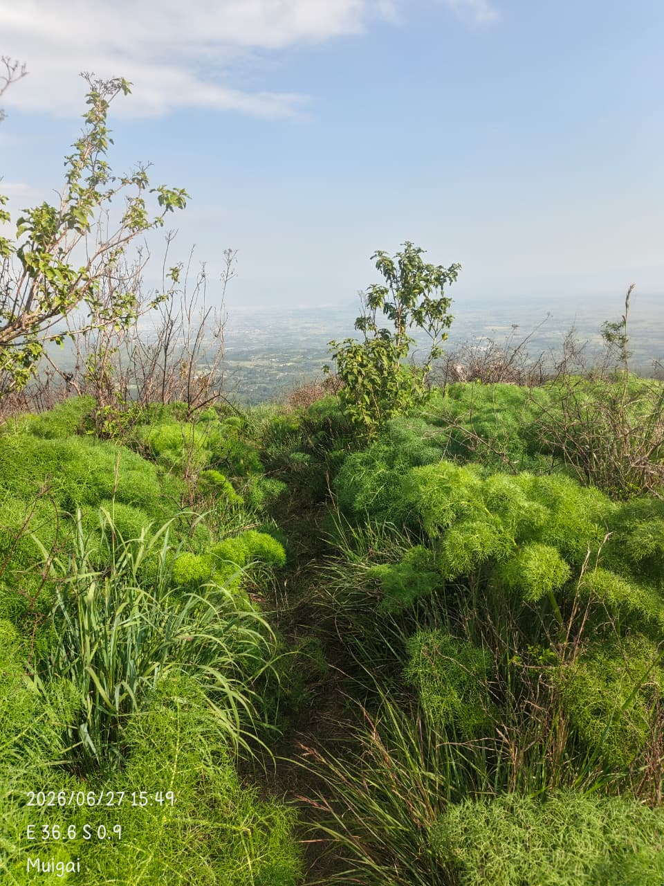
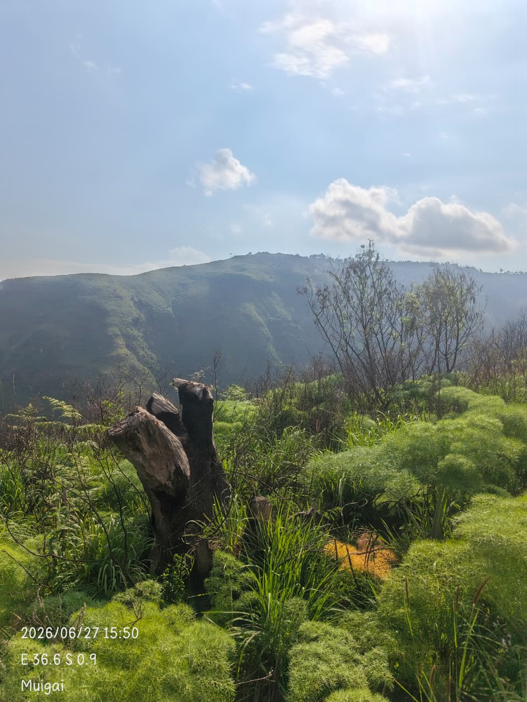
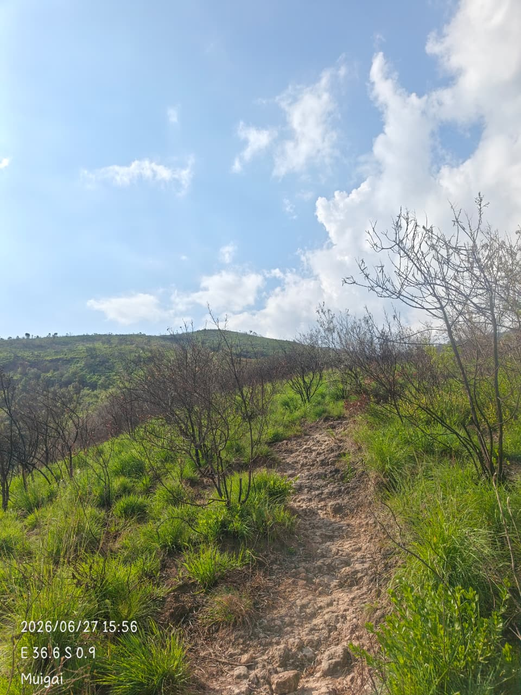

HIKING • KIJABE
KIJABE
HILLS.
Rocky trails, green highland landscapes and breathtaking Rift Valley views — experience Kijabe Hills with Starling Expeditions KE.
Book This Adventure →THE KIJABE EXPERIENCE
Walk the hills.
Embrace nature.
Kijabe Hills is a rewarding outdoor adventure along the Rift Valley escarpment. The trail takes you through beautiful highland landscapes, rocky paths and green scenery before opening up to unforgettable views across the Rift Valley.
This is the kind of hike that gives you a little bit of everything — a physical challenge, quiet moments in nature and the satisfaction of earning the view at the top.
KIJABE HILLS ADVENTURE
Per person
WHAT'S INCLUDED
FROM THE TRAIL
Kijabe Hills
in its natural beauty.



READY TO CLIMB?
Your Kijabe adventure
starts here.
Bring your energy. We will help you find the trail.
📞 0745 947 000